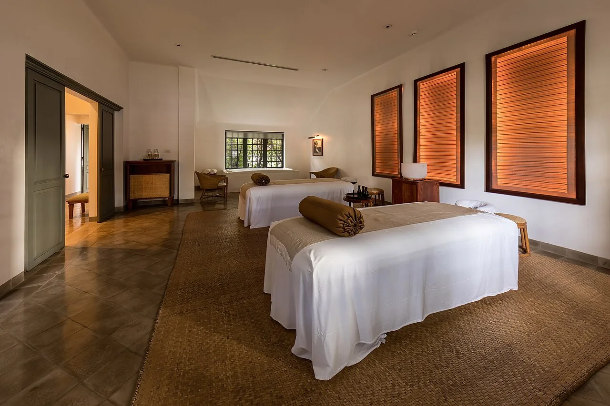
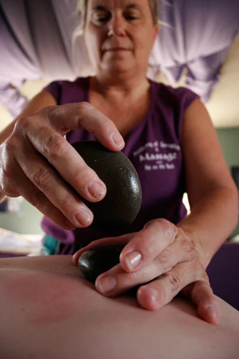

精油按摩
可依放鬆需求、時間與想照顧的部位整理選擇方向。
Pause · breathe · restore
精油按摩、越式洗髮與臉部保養集中說明，先依時間與當下需求找到適合的開始方式。
服務依品牌公開 Facebook／Instagram 整理；實際療程、時間、價格與適用條件以品牌確認為準。

Choose by feeling
不只列出名稱，而是用時間、需求與注意事項幫顧客理解差異，再進入預約。
可依放鬆需求、時間與想照顧的部位整理選擇方向。
將流程、預留時間與適合情境集中說明。
用肌膚狀態與保養目標協助顧客開始諮詢。
正式版可呈現時長、內容與預約前注意事項。
公開資料顯示營業至深夜，網站可清楚標示可約時段。
先回答交通、準備事項與常見問題，降低第一次預約門檻。

A quieter decision
顧客不必在社群貼文裡猜療程差異；網站先用需求導覽整理資訊，再把已經明確的詢問交給 LINE 或 Email。
「讓休息從選擇服務的那一刻開始。」
Easy reservation
正式版本可串接既有官方 LINE，保留人工確認，也減少第一輪重複問答。
放鬆、頭部洗護或臉部保養。
選擇偏好日期與大致時段。
提供需要先讓團隊知道的狀況。
由門市回覆服務與可約時間。
Make time for yourself
這個表單只示範網站如何整理第一輪需求，不會傳送或保存任何內容。